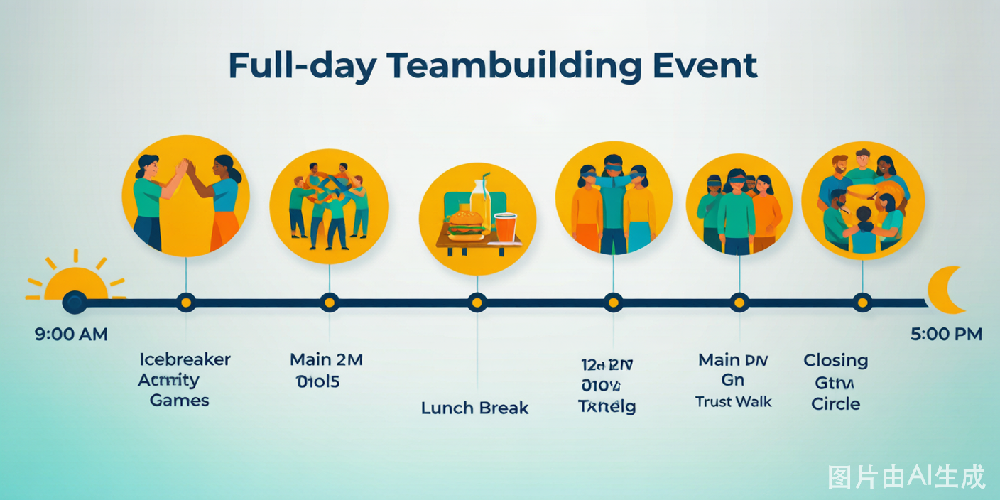
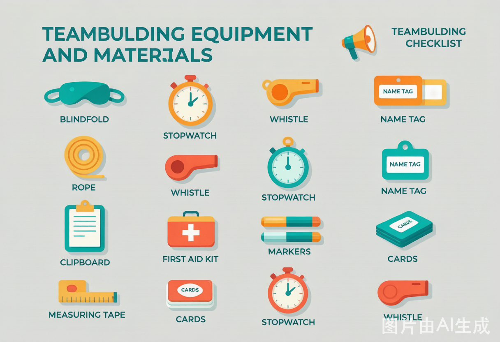

一日活动时间线总览

各环节详细说明
09:00–09:30 到达 & 开场
教练任务：
- ☐ 提前 30 分钟到达场地，检查布置
- ☐ 签到表/姓名贴准备就绪
- ☐ 开场白（参考 guide.md 开场模板）
开场话术参考：
"大家好，欢迎来到今天的团建活动。
我是教练 ______。
今天我们会通过几个小活动，
让大家互相认识、体验一下团队协作的感觉。
不需要任何基础，所有活动大家都能参与。
准备好了吗？我们开始！"09:30–10:00 破冰一：人类宾果（30 min）
- 游戏文档：human-bingo.md
- 时长分配：讲解 3 min + 游戏 15 min + 复盘 10 min
- 引导要点：强调"签名字"而不是打勾，帮助记住名字
- 复盘重点："今天认识了哪些新同事？"
10:00–10:30 破冰二：两真一假（30 min）
- 游戏文档：two-truths-one-lie.md
- 时长分配：讲解 2 min + 构思 3 min + 分享 20 min + 复盘 5 min
- 引导要点：教练先示范，鼓励具体故事
- 复盘重点："原来身边人还有这一面"
10:30–12:00 主体活动一：人结（90 min）
- 游戏文档：human-knot.md
- 时长分配：讲解 5 min + 尝试 30 min + 复盘 20 min
- 引导要点：
- Feelings："解不开的时候是什么感受？"
- Findings："这和我们团队工作方式像吗？"
- Future："回到工作，遇到'打不开的结'会怎么做？"
12:00–13:30 午餐 & 休息（90 min）
教练任务：
- ☐ 确认下午场地和道具已准备就绪
- ☐ 和客户（如有）简短交流上午观察
- ☐ 休息，为下午保留精力
13:30–15:00 主体活动二：盲人方阵（90 min）
- 游戏文档：blind-polygon.md
- 时长分配：讲解 5 min + 尝试 40 min + 复盘 25 min
- 引导要点：
- 教练不干预过程，只观察记录
- 提前准备好卷尺，复盘时测量"实际 vs 理想"
- 复盘重点：
- "当有人说'往左一点'，每个人理解一样吗？"
- 连接到"精准沟通"在工作中的意义
15:00–15:30 下午茶歇（30 min）
教练任务：
- ☐ 准备下午活动道具（眼罩、路线确认）
- ☐ 观察参与者状态，判断是否需要调整下午强度
15:30–16:30 信任活动：盲行（60 min）
- 游戏文档：blind-walk.md
- 时长分配：讲解 5 min + 第一轮 15 min + 交换角色 15 min + 复盘 20 min
- 引导要点：
- 路线必须提前踏勘
- 教练分布在路线关键位置监控安全
- 复盘重点：
- "交出控制权的感受 vs 肩负责任的感受"
- 适合深度讨论，时间可延长至 25 min
16:30–17:00 整体复盘 & Closing（30 min）
流程：
第一步（10 min）：三轮分享
"用一句话分享：今天最______的瞬间是？"
（填：印象深刻 / 意外 / 有收获）
第二步（15 min）：4F 模型整合
Facts："今天经历了哪几个关键环节？"
Feelings："哪个环节感受最强烈？"
Findings："这和我们团队有什么相似？"
Future："明天回到工作，你会改变什么？"
第三步（5 min）：Closing
"谢谢大家今天的投入。
我今天印象最深的一句话是：'______'。
希望大家带着这个体验回去。
团建结束，但团队的旅程才刚开始。"
物资总清单（一日团建）
必备
- ☐ 宾果卡（打印，每人一张） + 笔
- ☐ 绳子（直径 6–8mm，15 米 × 2 条）
- ☐ 眼罩（人数的一半 + 20% 备用）
- ☐ 口哨（紧急喊停用）
- ☐ 计时器（大号，可投影最佳）
- ☐ 姓名贴（签到用）
- ☐ 卷尺（复盘测量用）
- ☐ 马克笔 + 空白卡片（备用）
场地
- ☐ 室内空间（可腾空，用于人结）
- ☐ 户外草坪 或 室内大厅（用于盲人方阵）
- ☐ 有变化的路线（用于盲行，教练需提前踏勘）
- ☐ 午餐场地（或外卖安排）
教练个人
- ☐ 教练手册（打印 guide.md 和当日流程）
- ☐ 手机（计时、紧急联系）
- ☐ 急救包（创可贴、碘伏）
客户沟通要点
活动前确认（提前 2 天）
确认事项：
1. 准确人数：______ 人
2. 场地地址：______
3. 有无特殊身体状况参与者：______
4. 午餐安排：______（需教练协调吗？）
5. 客户是否有特别想强调的主题：______活动后反馈（当天或次日）
______ 总/老师，您好！
今日团建已顺利完成，感谢信任。
### 活动概况
- 参与人数：______ 人
- 完成环节：宾果 → 两真一假 → 人结 → 盲人方阵 → 盲行
- 参与者整体状态：______
### 观察与建议
（基于今天观察，给出 1–2 条 actionable 建议）
期待下次合作！
教练：______
日期：______变体方案
变体一：培训导向（替换部分游戏）
将下午的[盲行]替换为红黑游戏（需 45–60 min，压缩其他环节）
变体二：高能导向（适合年轻团队）
保留上午流程，下午改为：
- 13:30–14:30：信任背摔（高能量信任活动）
- 14:30–15:30：自由活动 / 运动比赛
变体三：半日压缩版（4 小时）
09:00–09:30 开场 + 人类宾果
09:30–11:00 人结（含复盘）
11:00–11:15 茶歇
11:15–12:30 盲人方阵（含复盘）
12:30–13:00 整体复盘 & closing_最后更新：2026-06-24_